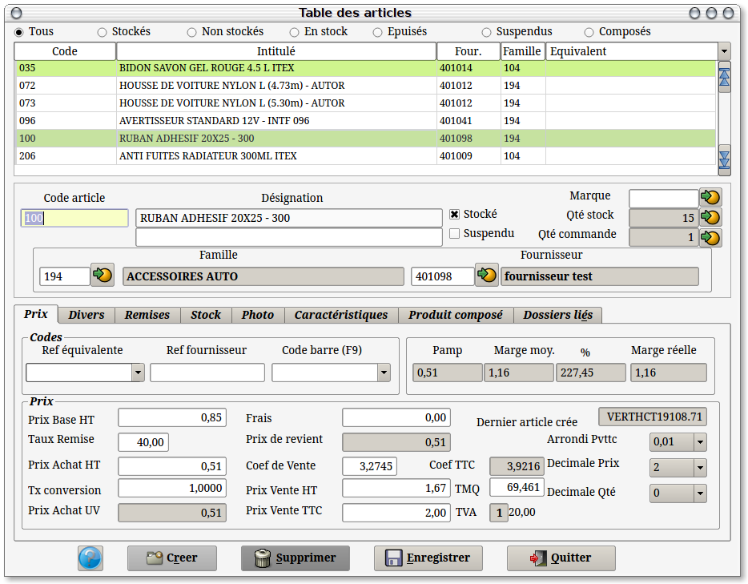
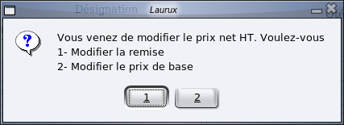
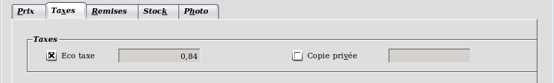
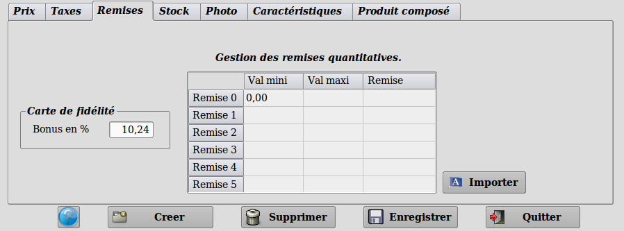
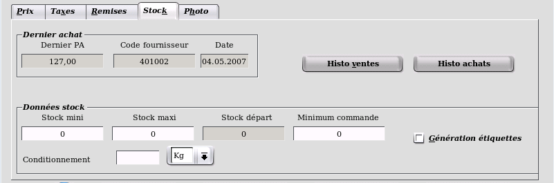
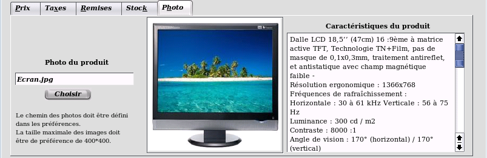
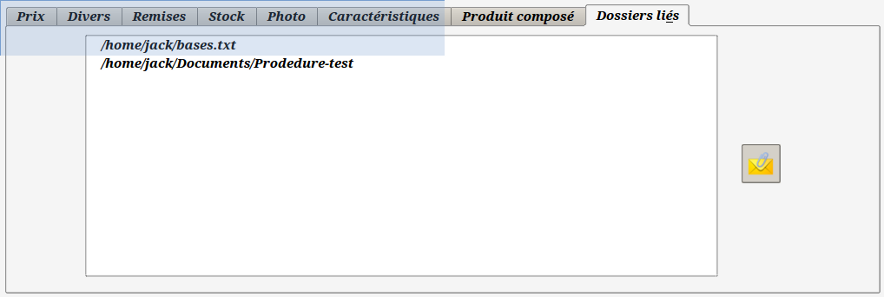
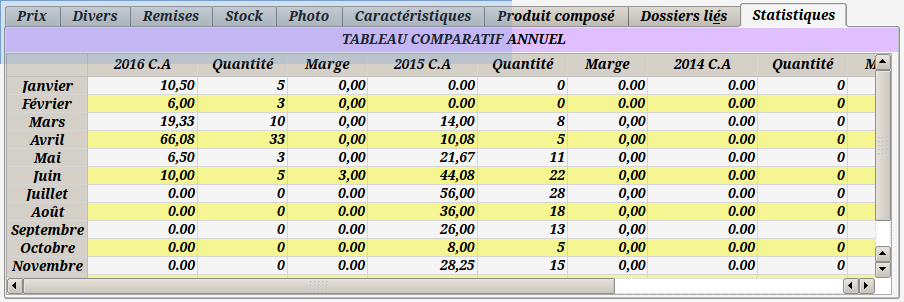

~ Comptabilité et Facturation Laurux ~

~ Comptabilité et Facturation Laurux ~ |
|
|
|

A partir de cet écran vous pouvez
créer, modifier
ou supprimer une fiche article.
Vous pouvez travailler soit avec les articles stockés, soit
avec les articles non stockés soit avec l'ensemble des
articles en cliquant simplement sur un des boutons situé sur
la partie supérieure de l'écran.
Pour rechercher une fiche afin de la visualiser, de
la modifier ou bien de la supprimer, vous pouvez cliquer sur chaque
titre des différentes colonnes pour effectuer un
tri ,
ainsi, si
vous cliquez sur " Code "
les
fiches seront triées par le code des articles, si vous
cliquez
sur " Intitulé
" les fiches seront
triées par la designation etc... Il suffit alors de saisir
les
premiers caracteres de la recherche.
Vous pouvez donc retrouver une fiche en
l'appelant par son code, son intitulé, son fournisseur, sa
famille, son prix d'achat ht, son coefficient de vente, son prix de
vente TTC, son code équivalent, sa reference fournisseur ou
son code barre.
Vous pouvez également faire apparaitre les produits stockés, non stockés ou l'ensemble des produits en cliquant un des boutons en haut d'écran.
Pour créer un article cliquez sur le bouton "Enregistrer" pour
remettre toutes zones
à blanc, puis allez sur la zone "Code
article".
Le code
article se saisit
sur 15 caractères maxi.
La désignation
se
saisit sur deux lignes de 50 caractères maxi.
Saisir le code famille ou
cliquer sur le bouton  pour la
récuperer.
pour la
récuperer.
Le code Tva de
l'article est determiné par celui de la famille. Il n'est
donc pas modifiable. Si dans une même famille vous utilisez
des articles ayant des taux de TVA differents, il faudra
créer une sous famille avec le taux correspondant. (
Ex dans une famille jardinage les outils de jardin sont
à 19.60 alors que les produits phytosanitaires
sont à 5.50 )
Saisir le code
comptable du
fournisseur ou cliquer sur le bouton pour le
récuperer.
Saisir un code
équivalent
sur 15 caractères maxi. Le nombre de codes équivalents pour un même produit n'est pas limité.
Deux possibilités d'utilisation soit en
deuxième code d'appel du produit soit en référence commune à plusieurs
produits similaires. Voir la note sur les codes équivalents.
Si le code équivalent saisit est la référence d'un produit existant alors il y aura une réciprocité automatique.
Ex : Soit deux produits codés MA10 et 568P. Si on alloue une code
équivalent "568P" au produit MA10 alors le code équivalent "MA10" sera
automatiquement ajouté au produit 568P.
Mais la gestion des références équivalentes est encore plus puissante puisque le programme gère les références croisées.
Ex: Soit un produit A ayant un code équivalent à B, si on donne un code
équivalent C à B alors le programme affectera automatiquement le code
équivalent C au produit A et le code équivalent A au produit C.
Pour affecter plusieurs codes équivalents à la suite, on saisit chaque code et on validera en appuyant sur la touche "Entrée".
Pour supprimer un code équivalent, on le sélectionne et on appuie sur la touche "SUPPR".
Saisir un code
fournisseur
sur 15 caractères maxi. Ce caractère est unique pour un même fournisseur mais pas pour des fournisseurs différents.
Saisir un code
barre
sur 15 caractères maxi. Le nombre de codes barre pour un même produit n'est pas limité cependant chaque code barre doit être
unique dans la table des produits et
cela est controlé par le programme. Le programme controle
également que la clé soit correcte. Si la
clé n'est pas bonne un message vous avertira et vous donnera
la bonne valeur.
Vous pouvez aussi faire F9
si vous souhaitez une
génération automatique du code barre.
Pour supprimer un code barre, on le sélectionne et on appuie sur la touche "SUPPR".
Note concernant la gestion du code barre.
-Le lecteur doit être parametré avec
le signe "*" comme préfixe.
-Dans la fiche article.
-le programme contrôle la
cohérence de la clé.
-Contrôle également sur la
longueur du code qui doit faire 8 ou 13 caracteres.
-Création du code barre en faisant F9
dans la zone code barre.
-Lecture optique du code est possible dans la zone
code article en dehors du bandeau de recherche.
- Gestion de la lecture optique du code barre dans les commandes, les
réceptions manuelles, les
réceptions automatiques, les mouvements de stocks
exceptionnels ainsi que dans la saisie des documents ( Facture, Devis,
BL, Proforma ).
Saisir le prix
de base.
Saisir la remise.
La remise peut se faire en cascade sur quatre niveaux. Pour acceder aux
trois autres niveaux faire un double-clic dans la zone remise pour
ouvrir les champs de saisie. Saisir les remises et valider chaque
saisie. La fenêtre se fermera automatiquement lors de la validation de
la dernière remise.
NB. Lors d'un appel de produit ayant une remise en cascade, cette fenêtre s'ouvrira toute seule.
Le prix de base
se calcule
Ces trois zones sont intimement liées.
Si vous modifiez le prix
de base
et que vous validiez ou modifiez ensuite la remise tout le
reste de la fiche va
être recalculé.
Si vous modifiez la remise,
tout le reste de la fiche va être recalculé.
Si vous modifiez le prix
d'achat,
le message suivant va apparaitre pour savoir si le programme doit
modifier la remise
ou le prix de base.

Si vous choisissez la première option seule la remise est recalculée, sinon tout le reste de la fiche va être recalculé.
Si vous modifiez le prix de vente TTC, le coefficient et le prix de vente HT sont recalculés.
Le code
arrondi vous
permet de d'appliquer des arrondis aux cinq centimes, dix centimes,
cinquante centimes ou à l'Euro.
Si vous modifiez le code arrondi, le coefficient, le prix de vente HT et le prix de vente TTCsont recalculés.
La zone décimale qté vous permet de definir le nombre de décimale nécessaire lors de la saisie de la quantité en facturation.
La zone décimale prix vous permet de determiner le nombre de décimale souhaité ( 2 ou 3 ) pour les prix.
La zone poids vous permet de saisir le poids du produit . Cette zone n'est apparente que si le bouton "Gestion du poids" est activé dans les préférences. Cela permet de connaitre le poids total d'une commande en saisie de commande fournisseur. (Utile pour le calcul des frais de port)
L'unité de poids en fiche produit est le kilogramme. Donc si votre produit pèse 1.350 kg il faudra saisir 1.350. Si votre produit Pèse 250 grammes il faudra saisir 0.250.
Si le produit est stocké, les quantités en stock seront affichées ainsi que les quantités en commande. En cliquant sur le bouton des commandes, une fenêtre s'ouvrira avec l'ensemble des commandes dans lesquelles le produit est présent. De plus un clic sur une ligne de commande ouvrira la commande, ce qui permettra d'en visualiser le détail.

Le deuxième onglet vous permettra de saisir des taxes suppémentaires.
Par exemple si vous souhaitez gerer l'éco-taxe il faudra cocher le bouton "Eco-taxe", la valeur qui s'affichera alors proviendra de la fiche famille du produit. Cette valeur peut-être modifiée.

Le
troisième onglet permettra la saisie des remises quantitatives ou la
saisie d'un pourcentage de réduction du calcul des points gagnés pour les cartes de fidélité. Le bonus
sera calculé à partir du prix de vente TTC du produit moins le pourcentage
défini ici.
NB : Cette option n'est visible que si la caisse est activée.
Grâce au bouton "Importer" vous pourrez récuperer les remises de la fiche famille.

Le quatrième onglet indiquera le prix d'achat, le code fournisseur ainsi que la date du dernier achat.
Vous pourrez aussi renseigner les zones stock mini et maxi qui sont utilisées lors de la saisie des commandes.
Note sur les zones stock mini et stock maxi.
-
En commande, les quantités proposées par le programme sont
calculées grâce à ces zones. Il en est de même lors des
générations automatiques des commandes.
Ex 1:
Lors de la commande si le stock du produit = 2, le stock mini = 5 et le
stock maxi = 10, le programme proposera une quantité à commander de 8
en saisie manuelle et, en cas de génération automatique, le
produit passera dans les propositions avec également une quantité égale
à 8.
Ex 2: Lors
de la commande le stock du produit = 6, le stock mini = 5 et le
stock maxi = 10, le programme proposera une quantité à commander de 1
en saisie manuelle et, en cas de génération automatique, dans ce cas le
produit n'apparaitra pas dans les propositions.
La zone stock départ n'est modifiable que lors d'une création de produit et seulement si le bouton"Stocké" est activé. Pour activer la zone il faut double-cliquer dessus.
La zone Minimum commande représente
la quantité minimum à commander pour le produit concerné. En saisie de
commande, si la quantité saisie est inférieure, alors on aura un
message d'alerte.
En
commande manuelle et en commande automatique, un contrôle est effectué
sur cette quantité. Si la quantité calculée est inférieure à la
valeur minimale de commande alors le programme proposera cette valeur.
Si vous souhaitez imprimer des étiquettes articles il faudra cocher le bouton "Génération étiquettes"
Deux boutons vous permettront de visualiser les historiques de ventes et d'achat du produit. Comme pour les commandes, un clic sur une ligne de facture ou du BL fournisseur ouvrira le document.

Le cinquième onglet propose une zone d'affichage pour une photo du produit ainsi qu'une zone de texte ou on peut saisir les caractéristiques détaillées du produit.
Comme il est indiqué, le chemin doit être défini dans les préférences. Veuillez classez vos photos dans un répertoire différent de Laurux car ce répertoire peut être écrasé lors des mises à jour.
Ces photos pouvant être utilisées sur une boutique en ligne, il est préférable que leur dimension d'exède pas 400*400 sous peine de ralentir l'affichage des pages.
Note : Les
photos n'étant pas stockées dans la base Laurux mais dans un répertoire
de votre choix, pensez à sauvegarder ce répertoire de temps en temps.

L' onglet "Produit composé" va permettre de définir si le produit sélectionné est un produit composé. Pour plus de détail allez en Gestion des produits composés
Un clic sur une des lignes des composants affichera la date de la dernière mise en production du produit composé.


Enfin, l'onglet "Statistiques" offre une vue des ventes sur 4 ans avec un total général en bas de page.
-----------------------------------------------------------------------------------------------------